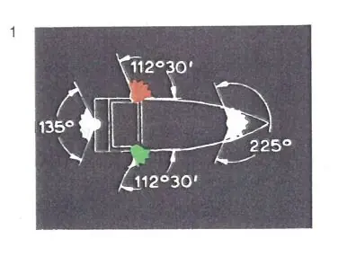

§ 3.01 Begriffsbestimmungen und Anwendungen (Anlage 3 Bild 1)
Rheinschiffahrtspolizeiverordnung
1. In diesem Kapitel gelten als
a) | "Topplicht" ein weißes starkes Licht, das über einen Horizontbogen von 225 Grad, und zwar von vorn bis beiderseits 22 Grad 30' hinter die Querlinie, und das nur in diesem Bogen sichtbar ist; |  |
b) | "Seitenlichter" an Steuerbord ein grünes helles Licht und an Backbord ein rotes helles Licht, von denen jedes über einen Horizontbogen von 112 Grad 30', das heißt von vorn bis 22 Grad 30' hinter die Querlinie, und nur in diesem Bogen sichtbar ist; | |
c) | "Hecklicht" ein weißes gewöhnliches Licht oder ein weißes helles Licht, das über einen Horizontbogen von 135 Grad, und zwar 67 Grad 30' von hinten nach jeder Seite und nur in diesem Bogen sichtbar ist; | |
d) | "von allen Seiten sichtbares Licht" ein Licht, das über einen Horizontbogen von 360 Grad sichtbar ist. |
2. Wenn es die Sichtverhältnisse erfordern, müssen die für die Nacht vorgeschriebenen Lichter zusätzlich bei Tag gesetzt werden.
3. Bei Anwendung dieses Kapitels gelten
a) ein Schubverband, dessen Länge 110 m und dessen Breite 12 m nicht überschreitet, als ein einzeln fahrendes Fahrzeug mit Maschinenantrieb von gleicher Länge und
b) ein Verband gekuppelter Fahrzeuge, dessen Länge 140 m überschreitet, als ein Schubverband von gleicher Länge.
4. Die in diesem Kapitel vorgeschriebenen Bezeichnungen sind in Anlage 3 abgebildet.